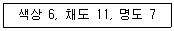
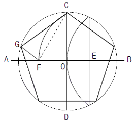
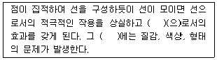
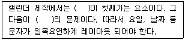
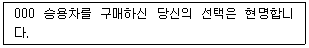

시각디자인산업기사 (2012-09-15 기출문제)
1과목: 색채학
1. 우리 눈의 시세포 중에서 색의 지각이 아닌 흑색, 회색, 백색의 명암만을 판단하는 시세포는?
- 추상체
- 간상체
- 간미연
- 양극세포
(정답률: 알수없음)

2. 다음 중 색채 심리의 연결이 틀린 것은?
- 식욕촉진 - 주황색, 적색
- 로맨틱한 느낌 - 갈색, 흰색
- 휴식 - 청색, 녹색
- 명예에 대한 욕망 - 보라, 황금색
(정답률: 알수없음)
3. 먼셀 색체계에 대한 설명 중 틀린 것은?
- 색상은 R, Y, G, B, P의 5색 사이에 한 색씩 더 넣어 10개를 기본색으로 하고 있다.
- 무채색의 표시방법은 V1, V2 ......V9와 같다.
- 먼셀의 색입체는 일그러진 구 모양이다.
- 먼셀 색입체에서 윗부분에 위치한 색일수록 명도가 높다.
(정답률: 55%)
4. 우리가 지각할 수 있는 전자파(가시광선) 중 720nm의 색은?
- 보라
- 파랑
- 노랑
- 빨강
(정답률: 알수없음)
5. 적색의 육류나 과일이 황색 접시 위에 놓여 있을 때 육류와 과일의 적색이 자색으로 보여 신선도가 낮아지고 미각이 떨어진다. 이것은 무엇 때문에 일어나는 현상인가?
- 항상성(constancy)
- 잔상(afterimage)
- 기억색(memory color)
- 연색성(color rendering)
(정답률: 34%)
6. 색채의 온도감에 대한 설명 중 옳은 것은?
- 파장이 짧은 쪽이 따뜻하게 느껴진다.
- 색채의 온도감은 색상에 의한 효과가 가장 강하다.
- 보라색, 녹색 등은 한색계의 색이다.
- 검정색보다 백색이 따뜻하게 느껴진다.
(정답률: 알수없음)
7. 표면색은 반사되는 파장 범위의 색으로 지각되는데 검정색의 경우에 해당되는 것은?
- 대부분의 파장을 반사
- 대부분의 파장을 흡수
- 대부분의 파장을 투과
- 검정색의 파장 범위를 강하게 반사
(정답률: 88%)
8. 헤링(E.Hering)의 색각이론 중 이화작용(dissimilation)과 관계가 있는 색은?
- 백색(white)
- 녹색(green)
- 청색(blue)
- 흑색(black)
(정답률: 알수없음)
9. 다음 중 무지개색의 순서대로 색을 배치하였을 때 관계가 가장 큰 것은?
- 채도조화
- 색상조화
- 보색대비
- 명도대비
(정답률: 84%)
10. 컬러 TV,의 화면이나 인상파 화가의 점묘법, 직물 등에서 발견되는 색의 혼색방법은?
- 동시감법혼색
- 계시가법혼색
- 병치가법혼색
- 감법혼색
(정답률: 알수없음)
11. 가을의 붉은 단풍잎, 붉은 저녁놀, 겨울 풍경색 등과 같이 친숙한 것들을 아름답게 생각하는 것을 져드의 색채 조화이론으로 설명한다면 어느 원리인가?
- 질서의 원리
- 비모호성의 원리
- 친근감의 원리
- 동류성의 원리
(정답률: 알수없음)
12. 다음 중 명도가 가장 높은 색은?
- 연두색
- 노란색
- 파란색
- 흰색
(정답률: 60%)
13. 색료 혼합에 대한 설명으로 틀린 것은?
- Magenta와 Yellow를 혼합하면 Red가 된다.
- Red와 Cyan을 혼합하면 Blue가 된다.
- Cyan과 Yellow를 혼합하면 Green이 된다.
- 색료 혼합의 2차색은 Red, Green, Blue이다.
(정답률: 알수없음)
14. 스펙트럼의 분광분포 중 짧은 단파장 쪽에 많은 방사에너지가 포함되어 있을 때 보여지는 색은?
- 청색계열
- 황색계열
- 녹색계열
- 적색계열
(정답률: 79%)
15. 오스트발트 색입체에서 무채색 축을 중심으로 수직 절단한 면의 모양은?
- 직사각형
- 타원형
- 마름모형
- 불규칙한 원추형
(정답률: 53%)
16. 문,스펜서가 1944년 미국의 광학잡지(JOSA)에 발표한 색채조화 논문과 관련이 없는 내용은?
- 고전적인 색채조화론의 기하학적 공식화
- 색채조화의 면적
- 색채조화의 채도
- 색채조화에 적용되는 미도
(정답률: 알수없음)
17. 먼셀(Munsell)의 3속성 기호로써 다음 조건을 옳게 나타낸 것은?

- 6YR 11/7
- 6YR 7/11
- 11YR 7/6
- 7YR 11/6
(정답률: 95%)
18. 빨간색을 보고 어떤 사람은 빨강 포스터를 생각하고 어떤 사람은 소방차를, 또 어떤 사람은 빨강 잉크를 생각하게 된다. 이와 같은 현상은 색의 어떤 성질을 말하는가?
- 색의 연상
- 색채의 상징
- 색채의 심리
- 색자극
(정답률: 93%)
19. 색채 체계에서 4원색설을 주장한 사람은?
- 헤링
- 돈더스
- 프랭클린
- 그라니트와 하트리지
(정답률: 알수없음)
20. L*a*b* 색체계에 대한 설명으로 틀린 것은?
- a*와 b*는 모두 +값과 -값을 가질 수 있다.
- a*가 -값이면 빨간색 계열이다.
- b*가 +값이면 노란색 계열이다.
- L이 100이면 흰색이다.
(정답률: 알수없음)
2과목: 인쇄 및 사진기법
21. 안료의 특성에 대한 설명으로 틀린 것은?
- 유기안료의 색상은 무기안료보다 우수하다.
- 유기안료의 착색력은 무기안료보다 우수하다.
- 유기안료의 은폐력은 무기안료보다 우수하다.
- 유기안료의 니약품성은 무기안료보다 우수하다.
(정답률: 20%)
22. 다음 중 평판 판식에 속하는 것은?
- 목판
- 스크린판
- 망점 그라비어판
- PS판
(정답률: 46%)
23. 정오의 태양광과 같은 조명각도의 인공광은?
- 순광
- 역광
- 톱라이트
- 램브란트광
(정답률: 알수없음)
24. 다음 중 투과력이 우수하여 해상력에 큰 변화가 없는 필터는?
- 사각형 필터
- 젤라틴 필터
- 스크루식 필터
- 특수필터
(정답률: 40%)
25. 그라비어(Gravure) 인쇄를 하기 위해서는 어떤한 제판 방식을 사용하는가?
- 볼록판 제판
- 오목판 제판
- 평판 제판
- 공판 제판
(정답률: 67%)
26. 실로 맨 속장을 다듬 절단하여 겉장을 싸는 방식으로 표지를 속장보다 조금 크게 만드는 제책 방식은?
- 중철
- 호부장
- 양장
- 반양장
(정답률: 70%)
27. 다음 중 제책의 목적으로 가장 거리가 먼 것은?
- 페이지 순서를 올바르게 맞추기 위하여
- 잉크의 퇴색방지 및 인쇄물에 광택을 부여하기 위하여
- 읽는 사람에게 편리를 도모하기 위하여
- 기록이나 지식의 원천으로 영구 보존하기 위하여
(정답률: 64%)
28. 사진의 농도와 노출량과의 관계를 나타내는 특성곡선상에도 나타나는 현상으로, 감광 유제에 빛을 적정량 이상으로 쬐면 오히려 농도가 감소하는 현상은?
- 솔라리제이션(Solarization)
- 에버하르트(Eberhard)
- 팬크로메틱
- 로즈(Ross)
(정답률: 46%)
29. 판통과 압통이 모두 실린더로 되어 있으며, 판통에 인쇄판을 붙이고 판통과 압통사이로 낱장 종이나 두루마리 종이를 통과시켜 인쇄하는 방식의 인쇄기는?
- 평압식 인쇄기
- 족답식 인쇄기
- 원압식 인쇄기
- 윤전식 인쇄기
(정답률: 47%)
30. 판면의 화선부가 오목하게 패여 있는 부분에 잉크가 채워져 피인쇄체로 옮겨짐으로써 인쇄가 되는 방식으로 인쇄물의 색채가 매우 풍부하며 사진 인쇄에 적합한 인쇄방식은?
- 콜로타이프 인쇄
- 스크린 인쇄
- 그라비아 인쇄
- 플랙소 인쇄
(정답률: 알수없음)
31. 인쇄물을 만드는 5가지 요소에 속하지 않는 것은?
- 원고
- 인쇄기
- 판
- 카메라
(정답률: 알수없음)
32. 35mm 소형 카메라의 표준 렌즈는 몇 mm인가?
- 28~30mm
- 40~45mm
- 45~58mm
- 75~80mm
(정답률: 39%)
33. 일반적인 평판 오프셋 인쇄 잉크의 건조 형식은?
- 자외선건조
- 증발건조
- 냉각건조
- 산화중합건조
(정답률: 70%)
34. 컬러 슬라이드로 컬러인화를 할 경우, 일단 슬라이드를 컬러 네거티브로 만들어 이것을 컬러 인화지에 인화하는데 이때의 네거티브를 무엇이라 하는가?
- 포지 - 네거티브(Posi-negative)
- 듀플리케이션(Duplication)
- 네거 - 네거티브(Nega-negative)
- 인터 네거티브(Inter negative)
(정답률: 알수없음)
35. 서체의 크기 중 14급은 다음 중 몇 포인트에 가장 가까운가?
- 5 포인트
- 7 포인트
- 10 포인트
- 14 포인트
(정답률: 알수없음)
36. 컬러 필름에 들어있는 발색제의 색이 아닌 것은?
- Yellow
- Magenta
- Cyan
- Green
(정답률: 82%)
37. Negative를 인화할 때 노광시간의 결정을 위해 하는 것은?
- contact print
- test strip
- framing
- dodging
(정답률: 알수없음)
38. 클로즈업 촬영을 할 때 벨로우즈의 길이가 2배로 늘어나면 노출량은 어떻게 해야 하는가?
- 1/2로 줄인다.
- 2배로 늘인다.
- 4배로 늘인다.
- 8배로 늘인다.
(정답률: 65%)
39. 다음 중 종이컵, 식료품 포장 가공에 많이 사용하는 것은?
- 비닐 칠
- 광택 니스 칠
- 파라핀 도포
- 폴리에스테를 필름 접합
(정답률: 47%)
40. 책의 표면가공법으로 무색투명하며 속건성인 에스테르고무나 코펄(Copal)등의 수지를 노긴 것을 사용하는 방법은?
- 잉크박기
- 광택 니스칠
- 민박기
- 접는 금내기
(정답률: 알수없음)
3과목: 시각디자인론
41. 1907~1908년 파리에서 생겨난 미술운동으로 피카소, 브라크 등이 자연과 인간을 기본적으로 기하학적인 단순한 형태로 환원시키려 한데서 시작된 디자인 사조는?
- 신인상파
- 입체주의
- 초현실주의
- 인체주의
(정답률: 67%)
42. 모듈러(Modulor)의 기본 개념은?
- 그리드
- 비례
- 연관
- 수학
(정답률: 알수없음)
43. 정원에 내접하는 정5각형 그리기에 대한 사항으로 틀린 것은?

- EC=EF
- CF=CG
- EO=OF
- AB=CD
(정답률: 38%)
44. 3차원 디자인으로 분류되지 않는 것은?
- 포장디자인
- 액세서리디자인
- P.O.P 디자인
- 에디토리얼디자인
(정답률: 알수없음)
45. 아름다운 인체, 눈의 결정, 조개껍질 등에서 느낄 수 있는 형태는?
- 이념적 형태
- 자연 형태
- 인위적 형태
- 순수 형태
(정답률: 75%)
46. 제도에서 실선의 용도가 아닌 것은?
- 회전 단면선
- 중심선
- 기준선
- 인출선
(정답률: 알수없음)
47. 디자인 매니지먼트의 목적 및 필요성은?
- 창의성, 독창성 등의 예술적 특성의 가치 확대
- 조직화, 지휘, 통제 등 디자인 과정의 체계화
- 조직관리와 자원활용의 기술
- 회계관리와 인사고가의 효율성
(정답률: 알수없음)
48. 다음 중 지시적 기능보다 상징적 기능을 가진 것은?
- 마크, 캐릭터
- 도표, 지도
- 부호, 기호
- 교통신호, 화살표
(정답률: 67%)
49. ( )안에 들어갈 디자인요소로 옳은 것은?

- 면
- 입체
- 색
- 공간
(정답률: 80%)
50. 일반적으로 지도의 산이나 계곡의 표현에 많이 사용되는 투상은?
- 직사투상
- 정투상
- 등각투상
- 표고투상
(정답률: 75%)
51. 디자인의 사회적 기능에 관한 설명으로 가장 거리가 먼 것은?
- 인간이 생활하는 목적에 따라 실용적이고 아름다운 조형을 계획한다.
- 인간이 사용하는 도구를 변화시키고 삶의 방법을 향상시킨다.
- 인간의 필요에 맞는 사물과 환경을 만들고 행복을 증진시킨다.
- 인간의 부를 증진시키고 경제적 활동을 돕는다.
(정답률: 77%)
52. 3소점으로 아래에서 위로 올려다 보이게 건물의 투시도를 그린 투시도법은?
- 조감 투시도
- 중심 투시도
- 성각 투시도
- 앙시 투시도
(정답률: 47%)
53. 낮과 밤 같이 서로 반대되는 요소가 인접하여 서로 강조 되는 것은?
- 착시(Optical Illusions)
- 대비(Contrast)
- 비례(Proportion)
- 변화(Variety)
(정답률: 80%)
54. 1920년을 전후하여 프랑스에서 르꼬르뷔제 등이 주창하여 일어나 운동으로 조형언어의 순화를 목적으로 기계를 조립하듯이 형태와 색채를 과학적으로 구성하여 건축, 공예, 생활예술에 이르기 까지 영향을 끼쳤던 순수주의 운동은?
- 시세션 운동
- 바우하우스 운동
- 퓨리즘 운동
- 모던 아트
(정답률: 42%)
55. 모든 사물은 도형(figure)과 바탕(ground)으로 이루어진다. 다음 중 도형이 되기 쉬운 조건이 아닌 것은?
- 면적이 작은 부분이 도형이 되기 쉽다.
- 좌우대칭인 부분이 도형이 되기 쉽다.
- 둘러싸여 막혀 있는 여역이 도형이 되기 쉽다.
- 무늬가 없는 부분이 도형이 되기 쉽다.
(정답률: 50%)
56. 아르누보에 대한 설명 중 틀린 것은?
- 담쟁이 넝쿨, 백조, 잠자리, 수선화 등의 형태를 모티브로 하였다.
- 벨기에에서 일어나 전 유럽으로 퍼져 나갔다.
- 직선적인 대칭의 구성을 특징으로 하였다.
- 자연의 유기적 형태를 모티브를 하였다.
(정답률: 64%)
57. 고결, 상승을 연상시키며 도전과 중력을 상징하는 것은?
- 수평선
- 수직선
- 점선
- 곡선
(정답률: 알수없음)
58. 기업에서 디자인 방법이나 생산 정책으로 내세우는 것들 중 설명이 틀린 것은?
- 경박단소(經舶短小) : 제품의 디자인과 생산에 있어 가볍고 얇고 짧고 작게 만들려는 경향 또는 그렇게 만들어진 상태를 말한다.
- 다품종소량생산(多品種小量生産) : 소비자에 주문에 따라 2차적 기능을 더하거나 빼서 여러 종류의 제품을 적은 수량으로 생산하는 것을 말한다.
- 노벨티(novelty) : 치열한 경쟁상회에서 타 회사보다 먼저 소비자의 요구에 부응하기 위해 내놓은 신제품을 말한다.
- 원소스멀티유즈(one source multi use) : 한개의 기본 원형이나 소스를 변형하여 여러 개의 다양하고 유용한 종류의 제품들을 생산해 내는 것을 말한다.
(정답률: 알수없음)
59. 바우하우스 교육 중 교육체제가 가장 산업과 밀착되고 디자인 교육의 기초과정이 되었던 시기는?
- Weimar Bauhaus
- Dessau Bauhaus
- Hanes Meyer 시대의 Bauhaus
- Mies Van de Rohe 시대의 Bauhaus
(정답률: 알수없음)
60. 디자인 전략은 한 기업의 디자인 활동이 지향해야 할 목표를 설정해 주는 종합적이며 장기적인 디자인 기획이다. 이를 구성하는 3요소가 아닌 것은?
- 기업 디자인 목표(Corporate Design Objectives)
- 기업 디자인 범주(Corporate Design Scope)
- 디자인 운영정책(Design Operating Policy)
- 디자인 트랜드(Design Trend)
(정답률: 알수없음)
4과목: 시각디자인실무 이론
61. 연극이나 영화, 음악회, 전람회 등의 고지적 기능을 지닌 포스터는 다음 중 어떤 분류에 속하는가?
- 공공 캠페인 포스터
- 장식 포스터
- 문화행사 포스터
- 상품광고 포스터
(정답률: 64%)
62. 일반적으로 모니터의 크기는 어느 것으로 결정하는가?
- 화면의 높이
- 화면의 가로 길이
- 화면의 해상도 수
- 화면의 대각선 길이
(정답률: 80%)
63. 다음 옥외광고에 관한 설명 중 틀린 것은?
- 옥외에 표출되는 광고라는 뜻으로, 벽같이 고정된 곳의 매체를 이용하여 상품, 기업 등을 표시하는 광고이다.
- 불특정 다수를 대상으로 하여 옥외의 일정 공간에 일정기간 동안 게시하는 광고물의 총칭을 말한다.
- 옥외광고는 옥상광고, 벽면광고, 돌출광고, 점두광고 애드벌룬, 현수막 등이 있다.
- 특정 다수를 대상으로 하여 옥외의 공간에 무한기간 동안 시각적 자극을 주는 광고물의 총칭을 말한다.
(정답률: 알수없음)
64. 마이클 포터(Michael E. Porter)의 경쟁전략 3기본형이 아닌 것은?
- 차별화 전략
- 저 원가 전략
- 집중화 전략
- 세분화 전략
(정답률: 28%)
65. 소비자들이 어떠한 제품을 구매하기 위하여 의사를 결정하는 과정은 기업의 마케팅 활동과 사회문화적 배경에 의해 영향을 받는데, 다음 중 사회 문화적 배경에 해당되는 것은?
- 제품
- 판매촉진
- 비형식적 정보
- 유통채널
(정답률: 40%)
66. 슈퍼그래픽의 기능으로 거리가 먼 것은?
- 지표물의 기능
- 공간조절의 기능
- 실용적 기능
- 생산적 기능
(정답률: 25%)
67. 시장 세분화(Market segmentation)를 통해 얻을 수 있는 기업의 장점이 아닌 것은?
- 소비자 욕구, 구매동기 등을 정확히 파악할 수 있다.
- 기업의 강점과 약점을 평가하여 유리한 시장을 선택할 수 있다.
- 마케팅 자원을 효율적으로 분배할 수 있다.
- 다양한 소비자들을 공략할 수 있다.
(정답률: 70%)
68. 과학 일러스트레이션의 대상으로만 묶여진 것은?
- 뉴스, 일기예보
- 신문, 잡지, 소설의 내용
- 기계, 가구, 기구 등의 공업제품
- 의학, 생물, 천문, 지리
(정답률: 알수없음)
69. 다음 중 B.I를 가장 적절하게 설명한 것은?
- 브랜드의 지명도를 높이기 위해 이벤트나 광고로 판매촉진을 하는 일
- 브랜드 구성 요소를 일관성, 주체성 있게 좋은 이미지로 형성시키는 것
- 상품을 수출하기 위해 상표명을 영문자로 통일하여 표기하는 일
- 상품에 이름에 붙여 사전에 테스트하여 수요 예측을 미리 해보는 것
(정답률: 85%)
70. 일러스트레이션(Illustration)을 설명한 것 중 틀린 것은?
- 좁은 의미로 핸드 드로잉(hand drawing)에 의한 그림만을 뜻한다.
- 넓은의미로는 회화, 사진을 비롯하여 도표, 도형 등 문자이외의 시각화된 것을 뜻한다.
- 주로 신문, 잡지, 광고물, TV, 영화 등의 대중 매체를 통해 복제되어 전달된다.
- 일러스트레이션은 순수회화의 요소이고 불분명한 컨셉을 가진 목표 지향적 그림으로서 독자적인 장르를 형성해 가고 있다.
(정답률: 42%)
71. ( )안에 순서대로 들어갈 용어로서 가장 옳은 것은?

- 독창성, 색상
- 심미성, 광고
- 실용성, 심미성
- 예술성, 기능
(정답률: 82%)
72. 상품을 구매토록 하기 위한 광고전략 모델인 "AIDMA"를 옳게 설명한 것은?
- Attention, Interest, Design, Market, Action
- Attention, Image, Desire, Method, Art
- Attention, Interest, Desire, Memory, Action
- Attention, Image, Desire, Message, Art
(정답률: 알수없음)
73. 어도비 포토샵 필터효과 중 이미지의 입체효과표현에 적합한 포토샵 필터는?
- Sharpen
- Blur
- Emboss
- Noise
(정답률: 85%)
74. CI도입 프로세스(Process)의 단계를 옳게 나열한 것은?
- 사전조사 - 어플리케이션 시스템 제작 - 로고타입 및 심벌마크 제작 - 매뉴얼 제작
- 사전조사 - 어플리케이션 시스템 제작 - 매뉴얼 제작 - 로고타입 및 심벌마크 제작
- 매뉴얼 제작 - 어플리케이션 시스템 제작 – 로고타입 및 심벌마크 제작 - 사전조사
- 사전조사 - 로고타입 및 심벌마크 제작 – 어플리케이션 시스템 제작 - 매뉴얼 제작
(정답률: 62%)
75. 포스터가 시각 광고물로서 본격 사용하게 된 역사적 주요 배경은?
- 유럽 연극제 포스터의 본격 등장
- 고대 이집트의 도망간 노예 소유주 광고
- 18세기경에 발명된 석판인쇄기술의 보급
- UN 인권선언 30주년 기념 행사
(정답률: 34%)
76. 잡지광고 포맷의 요소와 열독률과의 관계에 대한 설명으로 옳은 것은?
- 상품의 종류에 따라 열독률에 차이는 없으나, 남녀에 따라서는 차이가 난다.
- 한호에 실린 광고수가 많을 수 록 열독률은 떨어진다.
- 오른쪽 페이지 보다 왼쪽의 것이 열독률이 높다.
- 보디카피의 양이 많으면 주목률이 높아지지만, 열독률에는 영향이 없다.
(정답률: 40%)
77. 어떤 자동차회사가 다음 같은 광고를 했을 때, 소지자 의사결정 과정 중 어는 과정에 자극을 주기 위한 광고 전략인가?

- 문제인식
- 정보탐색
- 대안평가
- 구매 후 행동
(정답률: 59%)
78. Web 광고의 특징으로 틀린 것은?
- 타겟(Target)광고가 어렵다.
- 정보를 대량으로 공급할 수 있다.
- 피드백(Feed back)이 용이하다.
- 정보의 상호전달이 가능하다.
(정답률: 알수없음)
79. 시장조사나 세분화 단계에서 나이, 성별, 가족규모 소득, 직업, 교육정도, 종교 등의 요인을 파악하는 것은?
- 지리적 요인 분석
- 소비자 심리 분석
- 고객 호감도 분석
- 인구 통계적 분석
(정답률: 알수없음)
80. 전파광고에서 상품의 이름이나 이미지를 연상할 수 있도록 특별히 제작하여 사용하는 효과음이나 음악을 말하는 것은?
- narration
- sound logo
- i am fine thank you
- CM-song
(정답률: 34%)